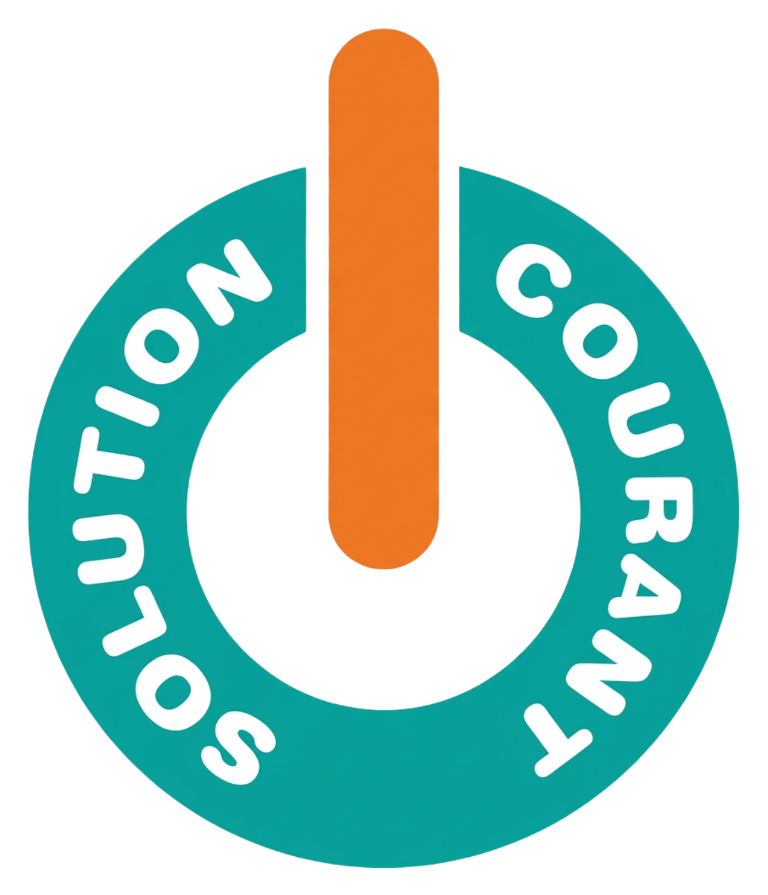

N
Nico kb
Avis Google vérifié
★★★★★
Très bon électricien, serieux et efficace. Sollicité pour la restauration d’un appartement en plein centre ville de Tours, tout s’est très bien passé.

Solution Courant Electricien certifiéIntervention en Indre-et-Loire et départements voisins, avec plus de 30 ans d’expérience pour vos projets en rénovation, maison neuve, domotique et climatisation.
Nico kb
Avis Google vérifié
★★★★★
Très bon électricien, serieux et efficace. Sollicité pour la restauration d’un appartement en plein centre ville de Tours, tout s’est très bien passé.
Bérengère Szymanek
Avis Google vérifié
★★★★★
Artisan intervenu dans le cadre d'une rénovation, a refait toute l'électricité de la cuisine + séjour. Sérieux, ponctuel, travail de qualité.
De gy.charrieau
Avis Google vérifié
★★★★★
Très bon professionnel, Ponctuel, travail de qualité, travaux réalisés dans le cadre d'un aménagement de la cuisine d'où dérivation électrique. On peut faire confiance sans crainte.
Solution Courant réalise tous vos travaux d’électricité en maisons neuves et en rénovation, assure le dépannage rapide, et installe des solutions modernes de domotique et de climatisation.

Reprise complète ou partielle d'installations anciennes : remplacement de tableaux, réécriture de circuits, mise aux normes, éclairage et prises.

Pose complète d'électricité pour maisons et bâtiments neufs : câblage, tableaux, éclairage, prises et mise en service finale.

Intervention rapide sur coupures, court-circuits, disjoncteurs, prises défectueuses et diagnostic de panne pour rétablir le courant.

Installation de systèmes intelligents : contrôle de l'éclairage, du chauffage, de la sécurité et des ouvertures depuis tablette ou smartphone.

Installation et maintenance de climatisation murale et extérieure : pose de splits, raccordement, mise en service et entretien régulier.

Installation, mise en service et entretien de systèmes d’alarme pour sécuriser votre habitation ou vos locaux professionnels : détecteurs, sirènes et équipements de contrôle.
Solution Courant intervient autour de Sainte-Maure-de-Touraine, dans un rayon d’environ 80 km, en Indre-et-Loire et départements voisins.
Zone indicative : cercle d’environ 80 km autour de Sainte-Maure-de-Touraine.
Quelques informations utiles sur Solution Courant.
Solution Courant est une entreprise d'électricité basée en Indre-et-Loire, fondée par Bertrand Grondin, électricien depuis plus de 30 ans.
Grâce à cette expérience, nous accompagnons les particuliers et les professionnels pour tous leurs projets électriques :
Entreprise à taille humaine, Solution Courant privilégie :
Avant chaque intervention, un devis clair est présenté et expliqué. Chaque chantier est réalisé dans le respect des normes en vigueur, avec le souci de la sécurité, du confort et de la fiabilité à long terme de votre installation.
Oui, nous pouvons intervenir rapidement en cas de panne totale de courant, disjoncteur qui saute en permanence, odeur de brûlé ou prise qui chauffe anormalement. En cas de doute sur la sécurité, il est préférable d’appeler plutôt que d’attendre.
Le coût dépend du type de travaux (dépannage, rénovation, installation neuve), du temps nécessaire et du matériel à prévoir. Dans la plupart des cas, nous proposons un devis détaillé et gratuit avant toute intervention, afin que vous sachiez exactement ce qui est inclus : déplacement, main-d’œuvre et fournitures.
Oui, nous disposons des qualifications nécessaires pour réaliser des travaux d’électricité chez les particuliers et les professionnels, dans le respect des normes en vigueur. Nous sommes également couverts par une assurance professionnelle, ce qui vous protège en cas de problème lié aux travaux.
Oui, nos interventions sont couvertes par les garanties légales en vigueur (garantie de bon fonctionnement, responsabilité décennale pour les travaux concernés, etc.). La durée et les conditions de garantie sont précisées sur le devis et la facture, afin que vous sachiez exactement ce qui est couvert.
Pour un dépannage, nous essayons d’intervenir le plus rapidement possible en fonction du planning, avec une priorité pour les pannes urgentes ou les situations dangereuses. Pour des travaux de rénovation ou d’installation, une date d’intervention est fixée avec vous après validation du devis, en tenant compte de vos contraintes et des nôtres.
Nous pouvons vérifier l’état de votre installation électrique, identifier les points non conformes (tableau, protections différentielles, prises, liaisons équipotentielles, etc.) et vous proposer une mise aux normes si nécessaire. En cas de disjoncteur qui saute, d’odeur de brûlé ou de prises qui chauffent, il est fortement conseillé de faire contrôler l’installation.
Nous réalisons la rénovation d’installations anciennes, les installations complètes en maison neuve, le dépannage électrique, la mise aux normes de tableaux, la domotique, la climatisation et les systèmes d’alarme.
Vous nous contactez par téléphone ou via le formulaire en décrivant votre besoin. Nous convenons si nécessaire d’une visite sur place, puis nous vous envoyons un devis détaillé que vous pouvez accepter ou refuser librement.
Oui, intervenir sur une installation électrique sans les compétences et le matériel adaptés peut être dangereux pour vous et pour votre logement. Pour toute anomalie récurrente (disjoncteur qui saute, échauffement, odeur de brûlé), il est préférable de faire appel à un électricien qualifié.
Retrouvez nos coordonnées et nos horaires ci-dessous.
Téléphone : +33 2 47 65 47 12
Email : solution.courant@gmail.com
Horaires : Lundi au Vendredi de 8h00 à 18h00
Zone : Indre-et-Loire et départements limitrophes.